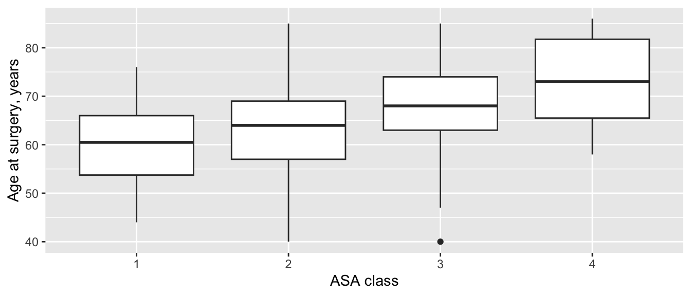

ANOVA à un facteur, test de Kruskal-Wallis, test du khi-deux et régression de Cox : trois groupes ou plus de patients différents.
Trois groupes ou plus de patients différents : les quatre classes ASA, les trois chirurgiens, trois types de greffon du LCA, les implants A, B et C. Vous pourriez comparer chaque paire de groupes avec les tests de la page 6, mais chaque test de plus est une nouvelle occasion d’obtenir un faux positif. Les tests de cette page posent d’abord une seule question : existe-t-il une différence quelconque entre les groupes ? Si la réponse est oui, Quels groupes diffèrent ? explique la suite.
Note💡 Comment fonctionne chaque section de cette page
Chaque section répond à une question sur l’un des jeux de données d’exercice : la cohorte de prothèses articulaires ou (pour le test du khi-deux) les reconstructions du LCA. Son premier bloc de code charge les packages et les données : vous pouvez donc aller directement à la section dont vous avez besoin. Exécutez les blocs de cette section dans l’ordre, de haut en bas.
Pour garder le code court, les exemples de prothèses articulaires utilisent tous les cas, y compris les 80 patients opérés des deux côtés. Dans une vraie étude, décidez comment les traiter (page 3) et dites ce que vous avez fait.
ANOVA à un facteur
La question : l’âge à l’opération diffère-t-il entre les classes ASA 1 à 4 ?
Quand l’utiliser
Le critère est une mesure, comparée entre trois groupes indépendants ou plus.
Dans chaque groupe, il est à peu près normal, ou chaque groupe est assez grand et pas fortement asymétrique (page 3).
Les groupes ont des dispersions semblables : en règle empirique, le plus grand écart-type (ET) ne dépasse pas environ le double du plus petit. Sinon, utilisez l’ANOVA de Welch (voir l’encadré R ou Python), surtout quand les groupes sont de tailles inégales.
library(tidyverse)cohort <-read_csv("data/cohort.csv", show_col_types =FALSE) |>mutate(asa =factor(asa)) # la classe ASA est un groupe, pas un nombreggplot(cohort, aes(asa, age)) +geom_boxplot() +labs(x ="ASA class", y ="Age at surgery, years")

cohort |>group_by(asa) |>summarise(n =n(), mean =mean(age), sd =sd(age))
import pandas as pdimport pingouin as pgimport matplotlib.pyplot as pltfrom scipy import statscohort = pd.read_csv("data/cohort.csv")ages = [group["age"] for asa, group in cohort.groupby("asa")] # une liste d'âges par classe ASAfig, ax = plt.subplots(figsize=(6, 3))parts = ax.boxplot(ages, tick_labels=["1", "2", "3", "4"]) # nommer le résultat l'empêche de s'afficherax.set_xlabel("ASA class")ax.set_ylabel("Age at surgery, years")plt.show()
L’âge augmente régulièrement avec la classe ASA. Les ET sont tous proches de 9 ans : les dispersions sont donc semblables. Les groupes sont toutefois de tailles très différentes : 300 interventions en ASA 2, seulement 18 en ASA 4.
age_anova <-aov(age ~ asa, data = cohort) # aov() ajuste l'ANOVA classique à un facteursummary(age_anova)
Df Sum Sq Mean Sq F value Pr(>F)
asa 3 5727 1908.9 23.9 1.28e-14 ***
Residuals 596 47599 79.9
---
Signif. codes: 0 '***' 0.001 '**' 0.01 '*' 0.05 '.' 0.1 ' ' 1
age_anova = pg.anova(data=cohort, dv="age", between="asa", detailed=True) # ANOVA classique à un facteurprint(age_anova)
Source SS DF MS F p_unc np2
0 asa 5726.693008 3 1908.897669 23.901792 1.284107e-14 0.107391
1 Within 47599.066992 596 79.864206 NaN NaN NaN
Lire le résultat
asa : cette ligne donne la variation entre les moyennes des groupes. Df = 3 (quatre groupes moins un), Sum Sq = 5727.
Residuals (R) ou Within (Python) : la variation des patients à l’intérieur de leurs groupes. Df = 596 (600 interventions moins quatre groupes).
F = 23.9 : la variation entre les groupes divisée par la variation à l’intérieur des groupes, chacune par degré de liberté. Si les groupes avaient la même moyenne, F serait proche de 1.
p < 0.001 (R affiche 1.28e-14) : des âges aussi différents entre les groupes seraient très improbables si chaque classe ASA avait le même âge moyen.
Taille d’effet et IC à 95 %
L’oméga carré (ω²) est la part de la variation de l’âge qu’explique la classe ASA, corrigée du petit biais vers le haut de l’êta carré (η²), plus simple. Comme repère approximatif, 0.01 est petit, 0.06 moyen et 0.14 grand.
# Effect Size for ANOVA (Type I)
Parameter | Omega2 | 95% CI
---------------------------------
asa | 0.10 | [0.06, 1.00]
- One-sided CIs: upper bound fixed at [1.00].
# oméga carré à partir du tableau d'ANOVA : (SS entre - ddl entre × MS intra) / (SS total + MS intra)ss_between, ss_within = age_anova.loc[0, "SS"], age_anova.loc[1, "SS"]df_between, ms_within = age_anova.loc[0, "DF"], age_anova.loc[1, "MS"]omega2 = (ss_between - df_between * ms_within) / (ss_between + ss_within + ms_within)print(omega2)
0.10274386772151635
ω² = 0.10 : la classe ASA explique environ un dixième de la variation de l’âge, un effet moyen. R affiche aussi un intervalle de confiance (IC) à 95 % unilatéral (de 0.06 à 1.00) : ω² ne peut pas être négatif, donc seule sa borne inférieure est informative. scipy et pingouin ne calculent pas cet IC. L’ANOVA ne dit pas quelles classes diffèrent : voir Quels groupes diffèrent ?.
Rédiger les résultats
Methods: Age was compared across ASA classes with one-way analysis of variance (ANOVA), with omega squared (ω²) as the effect size.
Results: Mean age was 59.8 years (SD 8.7) in ASA 1 and 73.7 years (SD 9.3) in ASA 4 (one-way ANOVA, F(3, 596) = 23.9, p < 0.001; ω² = 0.10, one-sided 95% CI 0.06 to 1.00).
Avertissement⚠️ Attention : l’ANOVA ne dit pas quels groupes diffèrent
Une ANOVA significative signifie qu’au moins une moyenne diffère d’une autre, pas que chaque groupe diffère de tous les autres. Ne la faites pas suivre d’une série de tests t non ajustés : cela ramène le problème de faux positifs que l’ANOVA devait éviter. Utilisez un test post hoc (page 15).
Astuce🔀 R ou Python : ANOVA classique ou de Welch
L’ANOVA classique suppose que les groupes ont la même dispersion. aov() de R, f_oneway() de scipy et anova() de pingouin l’exécutent tous par défaut.
L’ANOVA de Welch ne suppose pas des dispersions égales. oneway.test() de R exécute par défaut la version de Welch (ajoutez var.equal = TRUE pour la classique), à l’inverse de aov(). En Python, utilisez pg.welch_anova() ou stats.f_oneway(..., equal_var=False).
Ici les ET sont semblables, et l’ANOVA de Welch concorde : F = 23.5, p < 0.001.
Test de Kruskal-Wallis
La question : la satisfaction 1 an après l’opération diffère-t-elle entre les chirurgiens S1, S2 et S3 ?
Quand l’utiliser
Le critère est ordinal (satisfaction de 1 à 5), asymétrique, ou a un plafond ou un plancher, et vous comparez trois groupes indépendants ou plus.
Comme le test de Mann-Whitney, il travaille sur les rangs : il demande si les valeurs de certains groupes ont tendance à être plus grandes que celles d’autres groupes.
Avec deux groupes, il donne pratiquement le même résultat que le test de Mann-Whitney.
library(tidyverse)cohort <-read_csv("data/cohort.csv", show_col_types =FALSE)satisfied <- cohort |>filter(!is.na(satisfaction_1yr)) # patients qui ont réponducount(satisfied, surgeon, satisfaction_1yr) |>pivot_wider(names_from = satisfaction_1yr, values_from = n) # une ligne par chirurgien
La satisfaction a été déclarée pour 502 des 600 interventions. Avec chaque chirurgien, la plupart des patients étaient satisfaits (4) ou très satisfaits (5), et les trois distributions se ressemblent beaucoup.
satisfaction_test <-kruskal.test(satisfaction_1yr ~ surgeon, data = satisfied)satisfaction_test
Kruskal-Wallis rank sum test
data: satisfaction_1yr by surgeon
Kruskal-Wallis chi-squared = 0.67685, df = 2, p-value = 0.7129
scores = [group["satisfaction_1yr"] for surgeon, group in satisfied.groupby("surgeon")] # une liste par chirurgiensatisfaction_test = stats.kruskal(*scores)print(satisfaction_test)
Kruskal-Wallis chi-squared = 0.68 (R) ou statistic (Python) : la statistique H. Elle mesure l’écart entre les rangs moyens des groupes. Les deux programmes la corrigent pour les nombreux scores ex æquo.
df = 2 : trois groupes moins un.
p = 0.713 : un écart de satisfaction au moins aussi grand que celui observé entre les groupes serait très fréquent si les patients des chirurgiens étaient également satisfaits.
Taille d’effet et IC à 95 %
L’epsilon carré (ε²) est l’équivalent de ω² basé sur les rangs : la part de la variation des rangs qu’expliquent les groupes, de 0 à 1. C’est H divisé par (n − 1).
set.seed(2026) # son IC vient d'un bootstrap (rééchantillonnage aléatoire) ; une graine le rend reproductibleeffectsize::rank_epsilon_squared(satisfaction_1yr ~ surgeon, data = satisfied)
Epsilon2 (rank) | 95% CI
------------------------------
1.35e-03 | [0.00, 1.00]
- One-sided CIs: upper bound fixed at [1.00].
ε² = 0.001 : le chirurgien n’explique pratiquement rien de la variation de la satisfaction. L’IC unilatéral de R va de 0.00 à 1.00 ; il vient d’un bootstrap, ce qui explique la graine dans le code. scipy n’a pas de fonction pour cela.
Rédiger les résultats
Methods: Satisfaction at 1 year (a 5-point ordinal scale) was compared across surgeons with the Kruskal-Wallis test, with epsilon squared (ε²) as the effect size.
Results: Of 600 procedures, 502 had a satisfaction score at 1 year. The median was 4 (IQR 4 to 5) for surgeon S1 and 5 (IQR 4 to 5) for surgeons S2 and S3 (Kruskal-Wallis H = 0.68, df = 2, p = 0.713; ε² = 0.001, one-sided 95% CI 0.00 to 1.00).
Avertissement⚠️ Attention : les réponses manquantes ne sont pas aléatoires
La satisfaction manque pour 98 interventions. Si les patients mécontents répondaient moins souvent, chaque chirurgien paraît meilleur qu’il ne l’est, et la comparaison peut aussi être biaisée. Indiquez toujours combien de patients ont répondu dans chaque groupe, et demandez-vous si la non-réponse diffère d’un groupe à l’autre.
Astuce🔀 R ou Python : ex æquo et format des données
kruskal.test() et stats.kruskal() corrigent tous deux H pour les ex æquo : ils concordent donc même avec une échelle à 5 points pleine de scores ex æquo. R prend une formule (outcome ~ group) ; scipy prend une liste de valeurs par groupe, ce qui explique que le code Python construise d’abord scores.
Test du khi-deux
La question : le retour au sport 12 mois après une reconstruction du LCA diffère-t-il entre les greffons os-tendon rotulien-os (BPTB), aux ischio-jambiers et au tendon du quadriceps ?
Quand l’utiliser
Le critère est catégoriel (ici oui/non), comparé entre trois groupes indépendants ou plus : un tableau r × c.
Chaque effectif attendu doit être d’au moins 5. Sinon, regroupez des catégories qui vont ensemble, ou utilisez le test exact de Fisher, que fisher.test() de R exécute de façon exacte aussi sur de plus grands tableaux. stats.fisher_exact() de scipy accepte de plus grands tableaux mais estime leur valeur p par rééchantillonnage aléatoire : elle change un peu d’une exécution à l’autre, sauf si vous donnez une graine.
Les données du LCA contiennent une ligne par reconstruction primaire ; rts_12mo vaut 1 si le patient avait repris son sport d’avant la lésion 12 mois après l’opération.
À 12 mois, 65.1 % des reconstructions BPTB, 43.5 % des reconstructions aux ischio-jambiers et 32.8 % des reconstructions au tendon du quadriceps avaient repris leur sport.
Effectifs attendus : ce que contiendrait chaque cellule si le retour au sport était le même avec chaque greffon. Le plus petit est 33.1 : le test est donc valide.
X-squared = 22.24, df = 2 : la statistique du khi-deux, avec (3 greffons − 1) × (2 réponses possibles − 1) = 2 degrés de liberté.
p < 0.001 : des différences aussi grandes seraient très improbables si les trois greffons avaient le même taux de retour au sport.
Taille d’effet et IC à 95 %
Le V de Cramér mesure la force de l’association dans un tableau, de 0 (aucune) à 1 (parfaite). Pour un tableau à 2 colonnes, environ 0.1 est petit, 0.3 moyen et 0.5 grand.
effectsize::cramers_v(rts_table, adjust =FALSE) # voir l'encadré R ou Python
Cramer's V | 95% CI
-------------------------
0.25 | [0.16, 1.00]
- One-sided CIs: upper bound fixed at [1.00].
print(association(rts_table, method="cramer"))
0.25208169478915055
V = 0.25, une association entre petite et moyenne. Pour un critère oui/non, le taux dans chaque groupe (avec son IC, comme à la page 4) est en général plus informatif que V. Et rappelez-vous ce que le test ne dit pas : quels greffons diffèrent (Quels groupes diffèrent ? ci-dessous), ni pourquoi. Les greffons n’ont pas été attribués au hasard : une différence peut donc venir des patients plutôt que du greffon ; la page 12 montre comment ajuster sur d’autres facteurs.
Rédiger les résultats
Methods: Return to sport at 12 months was compared across graft types with the chi-square test, with Cramér’s V as the effect size.
Results: Return to sport at 12 months followed 84 of 129 BPTB reconstructions (65.1%), 67 of 154 hamstring reconstructions (43.5%) and 22 of 67 quadriceps reconstructions (32.8%) (χ² = 22.24, df = 2, p < 0.001; Cramér’s V = 0.25, one-sided 95% CI 0.16 to 1.00).
Avertissement⚠️ Attention : pas de correction de Yates ici, et vérifiez les effectifs attendus
La correction de continuité de Yates (page 6) ne s’applique qu’aux tableaux 2 × 2 : les deux programmes l’omettent donc pour ce tableau 3 × 2. La règle des effectifs attendus s’applique toujours : l’exercice 3 montre un tableau qui l’enfreint, et que faire.
Astuce🔀 R ou Python : deux versions du V de Cramér
cramers_v() d’effectsize applique par défaut une correction du biais de petit échantillon (0.24 ici). association() de scipy ne le fait pas (0.25). Nous avons mis adjust = FALSE en R pour que les deux concordent. L’une ou l’autre est acceptable ; indiquez laquelle vous rapportez.
Régression de Cox
La question : le risque de révision diffère-t-il entre les implants A, B et C ?
Quand l’utiliser
Le critère est un délai jusqu’à un événement (la révision), comparé entre trois groupes indépendants ou plus.
Le test du log-rank s’étend à trois groupes ou plus et répond à « les courbes diffèrent-elles ? ». La régression de Cox donne en plus un hazard ratio pour chaque groupe par rapport à un groupe de référence, et peut ajuster sur d’autres variables.
Elle suppose que le hazard (risque instantané) de chaque groupe est un multiple constant de celui du groupe de référence au fil du temps (risques proportionnels). La page 14 montre comment le vérifier et traite la régression de Cox en entier.
implant_cox <-coxph(Surv(followup_years, revised) ~ implant, data = cohort) # l'implant A est la référencesummary(implant_cox)
Call:
coxph(formula = Surv(followup_years, revised) ~ implant, data = cohort)
n= 600, number of events= 81
coef exp(coef) se(coef) z Pr(>|z|)
implantB -0.2020 0.8171 0.3092 -0.653 0.514
implantC 1.1208 3.0673 0.2579 4.345 1.39e-05 ***
---
Signif. codes: 0 '***' 0.001 '**' 0.01 '*' 0.05 '.' 0.1 ' ' 1
exp(coef) exp(-coef) lower .95 upper .95
implantB 0.8171 1.224 0.4458 1.498
implantC 3.0673 0.326 1.8502 5.085
Concordance= 0.659 (se = 0.03 )
Likelihood ratio test= 27.64 on 2 df, p=1e-06
Wald test = 29.63 on 2 df, p=4e-07
Score (logrank) test = 33.48 on 2 df, p=5e-08
implant_cox = CoxPHFitter().fit( cohort[["followup_years", "revised", "implant"]], duration_col="followup_years", event_col="revised", formula="implant", # l'implant A est la référence fit_options={"precision": 1e-9}, # s'arrêter seulement à la convergence complète ; voir l'encadré R ou Python)print(implant_cox.summary[["exp(coef)", "exp(coef) lower 95%", "exp(coef) upper 95%", "p"]])
exp(coef) : le hazard ratio de chaque implant par rapport à l’implant A, la référence. Implant B : 0.82 ; implant C : 3.07.
lower .95 / upper .95 : les IC à 95 %. Celui de l’implant B (de 0.45 à 1.50) contient 1 : les données sont compatibles avec l’absence de différence par rapport à A. Celui de l’implant C (de 1.85 à 5.09) ne le contient pas.
Pr(>|z|) : la valeur p de chaque implant par rapport à A (p = 0.514 pour B, p < 0.001 pour C).
Likelihood ratio test = 27.6 on 2 df, p < 0.001 : le test global qui demande si l’implant compte du tout, l’équivalent pour Cox du test F de l’ANOVA. Python l’affiche comme deuxième nombre.
Score (logrank) test = 33.5 : le test du log-rank pour les trois implants, que Python affiche en dernier. (Le test du score de Cox et le test du log-rank traitent un peu différemment les délais de révision ex æquo : ils concordent donc à une décimale près, pas exactement.)
Taille d’effet et IC à 95 %
Les hazard ratios avec leur IC à 95 % sont les tailles d’effet : l’implant C avait un hazard de révision environ trois fois plus élevé que celui de l’implant A (3.07, IC à 95 % de 1.85 à 5.09), alors que l’implant B ne différait pas clairement de A (0.82, IC à 95 % de 0.45 à 1.50).
Rédiger les résultats
Methods: Revision-free survival was compared across implants with Cox proportional hazards regression, with implant A as the reference.
Results: Compared with implant A, the hazard ratio for revision was 3.07 (95% CI 1.85 to 5.09) for implant C and 0.82 (95% CI 0.45 to 1.50) for implant B (likelihood ratio test for implant type, χ² = 27.6, df = 2, p < 0.001).
Avertissement⚠️ Attention : le groupe de référence influence la lecture des résultats
Chaque hazard ratio est ici relatif à l’implant A : le résultat ne compare donc pas B à C directement. Choisissez le groupe de référence à dessein (l’implant standard, le plus grand groupe) et dites lequel c’est. Et comme à la page 4, les décès sont ici traités comme des données censurées ; la page 13 traite des risques concurrents.
Astuce🔀 R ou Python : convergence et groupe de référence
Les deux programmes prennent le premier groupe par ordre alphabétique (A) comme référence et traitent les délais de révision ex æquo avec la méthode d’Efron. La règle de convergence par défaut de lifelines s’arrête ici un peu trop tôt (un hazard ratio de 0.81713 pour l’implant B au lieu de 0.81709) : nous la resserrons donc avec fit_options={"precision": 1e-9}.
Quels groupes diffèrent ?
Les tests ci-dessus répondent à « existe-t-il une différence entre les groupes ? ». Quand la réponse est oui, la question suivante est de savoir quels groupes diffèrent de quels autres. Comparer chaque paire avec un test ordinaire augmente le risque de faux positif : avec quatre classes ASA, il y a six paires, et six tests à p < 0.05 donnent environ une chance sur quatre d’au moins une fausse alerte même quand il ne se passe rien.
Les tests post hoc comparent les paires en gardant le taux d’erreur global à 5 % :
Après
À utiliser
Page
ANOVA à un facteur
HSD de Tukey (Games-Howell si les dispersions diffèrent)
Le HSD de Tukey contrôle seul les faux positifs, comme le test de Dunn et les autres tests deux à deux une fois l’ajustement de Holm appliqué : aucun n’a besoin d’un test global significatif au préalable. Décidez avant de voir les données quelles comparaisons vous ferez, et dites-le dans vos Méthodes (page 15).
Exercices
Les solutions utilisent les packages et les données chargés dans les sections ci-dessus : exécutez donc d’abord la page depuis le début.
1. L’IMC (indice de masse corporelle) diffère-t-il entre les classes ASA ? Faites une ANOVA à un facteur et rapportez ω².
Results: Mean BMI was 26.3 kg/m² (SD 4.9) in ASA 1 and 36.2 kg/m² (SD 3.3) in ASA 4 (F(3, 596) = 31.1, p < 0.001; ω² = 0.13, one-sided 95% CI 0.09 to 1.00).
Cela n’a rien de surprenant : l’obésité fait partie de ce que les anesthésistes pèsent quand ils attribuent une classe ASA.
2. Un collègue demande si la durée de séjour diffère entre les trois chirurgiens. Quel test utiliseriez-vous, et que trouvez-vous ?
AstuceSolution
La durée de séjour est fortement asymétrique à droite, avec beaucoup d’ex æquo (page 3), et il y a trois groupes indépendants : le test de Kruskal-Wallis.
Kruskal-Wallis rank sum test
data: los_days by surgeon
Kruskal-Wallis chi-squared = 0.73189, df = 2, p-value = 0.6935
set.seed(2026)effectsize::rank_epsilon_squared(los_days ~ surgeon, data = cohort)
Epsilon2 (rank) | 95% CI
------------------------------
1.22e-03 | [0.00, 1.00]
- One-sided CIs: upper bound fixed at [1.00].
stays = [group["los_days"] for surgeon, group in cohort.groupby("surgeon")]los_test = stats.kruskal(*stays)print(los_test, los_test.statistic / (len(cohort) -1))
Results: Across the three surgeons, Kruskal-Wallis H = 0.73 (df = 2, p = 0.694; ε² = 0.001, one-sided 95% CI 0.00 to 1.00).
Il n’y a pas de preuve claire que la durée de séjour diffère entre les chirurgiens.
3. L’échec de la greffe dans les 2 ans diffère-t-il entre les trois greffons ? Vérifiez d’abord les effectifs attendus. Que faites-vous, et que trouvez-vous ?
# Pour les tableaux plus grands que 2 x 2, scipy estime la valeur p de Fisher par rééchantillonnage aléatoire ; une graine la rend reproductiblefailure_fisher = stats.fisher_exact(failure_table.to_numpy(), method=stats.PermutationMethod(rng=np.random.default_rng(2026)))print(failure_fisher.pvalue)
0.9405
Avec un greffon au tendon du quadriceps, le nombre attendu d’échecs est 2.9, inférieur à 5 : le test du khi-deux n’est donc pas fiable ; R le dit lui-même, avec l’avertissement « Chi-squared approximation may be incorrect ». Regrouper les greffons changerait la question : utilisez donc le test exact de Fisher sur tout le tableau 3 × 2. fisher.test() de R le calcule de façon exacte (p = 0.943) ; scipy l’estime à partir de 9,999 tableaux aléatoires (0.9405 avec cette graine), proche de R mais pas identique.
Results: Graft failure within 2 years followed 6 of 129 BPTB reconstructions (4.7%), 6 of 154 hamstring reconstructions (3.9%) and 3 of 67 quadriceps reconstructions (4.5%) (Fisher’s exact test p = 0.943).
Dans vos Méthodes, dites quel test vous avez utilisé pour ce tableau, et pourquoi.